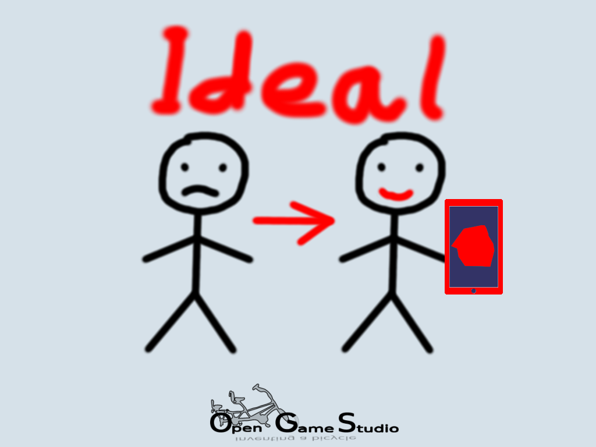

2018-11-19 00:00

In this article, we discuss how ideal video game and video game development tool look like, in our opinion.
Questions
As you know, the goals of Opensource Game Studio are:
This time we asked ourselves two simple questions:
The best answers we could think of are below.
Answer 1: A video game is ideal if it delivers maximum pleasure possible
While content is probably the most important aspect to keep a player invested into the game, the technical side is the transport to deliver that content. There are quite a few technical problems that may damage otherwise excellent content of a game:
We work hard to make sure the games we create are accessible everywhere. That's why we released the second demonstration of OGS Mahjong 2 only for the web: because you can run web version virtually anywhere.
Answer 2: A video game development tool is ideal if it lets you create a video game of your dream in the shortest time possible
Even though we put a lot of effort into sharing our knowledge through guides and tutorials, we understand that those take a lot of time to study. One can't possibly make even a simple video game like Memory without performing the following steps:
write-build-debug steps as many times as necessaryWriting code and debugging are probably the ultimate forms of input and output of any software, so we can't escape those. However, there are ways to completely remove (or at least significantly decrease) the need for development environment setup and build steps. And this is what we are going to do in the coming months.
Our goal for the coming months is to create a video game development tool that would allow any programmer (or sufficiently skilled person) to create the Memory video game from scratch in an hour.
That's it for discussing how ideal video game and video game development tool look like, in our opinion.